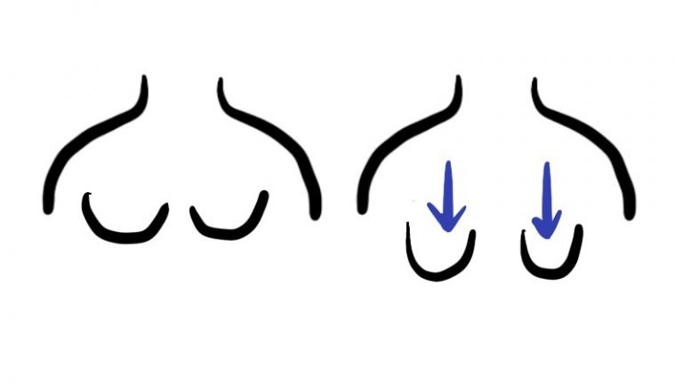

【25歲後的下垂危機】小罩杯女性也要注意！*合作文
罩杯與下垂？
下垂對C罩杯以下的女性來說，
好像從來不是需要擔心的事~
因為我們總覺得要下垂也要有東西
可以讓他垂阿!!XD
如果想要乳溝都需要穿超集中托高
而且墊墊超厚的內衣才有，
小胸妹唯一的好處大概就是
「不怕下垂」~
但真的是這樣嗎?
其實胸部小，很容易造成「皮，下垂」!
「皮，下垂」就是指，即使沒有胸肉可以垂，
胸部部位的皮也會往下掉，
導致乳頭跟著往下墜，
因為沒有胸肉的支撐，乳頭會更往下掉，
看起來下垂狀況甚至比大胸部的人更嚴重！
而且穿起衣服胸部會看起來更小！
##大胸下垂##↓↓↓
##小胸下垂##↓↓↓
這個殘酷的事實，
是我從正在哺乳的表姊身上發現的！
如果胸部長期處於沒有支撐的狀況下
或是受外力（哺乳）不斷拉扯下
支撐胸部的庫柏韌帶被過度磨損
而失去支持胸部的力量
可能就會有「早發性下垂」的現象。
因此，建議女性盡早開始保養胸部，
白天要穿鋼圈內衣
運動要穿運動內衣
睡覺要穿晚安內衣
晚安內衣怎麼選呢？
晚安內衣有三個挑選的重點
一、機能
亞洲女性習慣側睡，而且翻覆的次數較多。
每次的翻覆，胸部在沒有晚安內衣包覆下，
都是對支撐胸部的酷柏韌帶的一次耗損。
因此，晚安內衣本身
布料伸縮彈力要足夠，
才能將該在胸前的背肉、副乳往前方集中，
並且布料的彈性能抵消翻身的力量，
讓肉肉乖乖的待在胸前！
二、拉提性
在胸前特別設計的拉提性
胸部自然的集中
讓庫柏韌帶承受最小的壓力
胸線周圍布料有特別加壓
讓胸部呈現最美的渾圓
穿過很多間的晚安內衣
穿上「立即爆乳」
起床「歪七扭八」
只有這款viage晚安內衣
穿了讓我有感！
不僅符合上述所有晚安內衣必備的條件
穿了一陣子後，
起床脫掉viage要換穿一般鋼圈內衣時
胸部竟然沒有像以前那樣瞬間往下往外
而是堅挺的在胸前
穿鋼圈內衣幾乎都不用又撥奶又撥副乳了
其實我不過28歲，
我本來以為自己的胸型B的很正常
沒想到穿了viage一陣子後再看自己的胸
才發現原來我是 假B真C
只是之前都假性下垂假性外溢了
還好，沒有弄假成真！
如果沒有穿晚安內衣的習慣，
妳的庫柏韌帶
有90%以上的可能已經受損
下垂就是個可預見去無法改變的危機。
試試睡覺穿viage晚安內衣吧
Viage晚安內衣，揪團一起買更划算↓↓